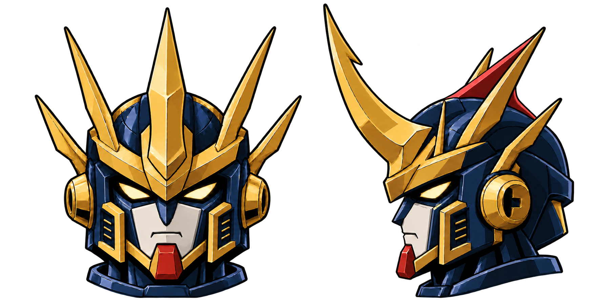
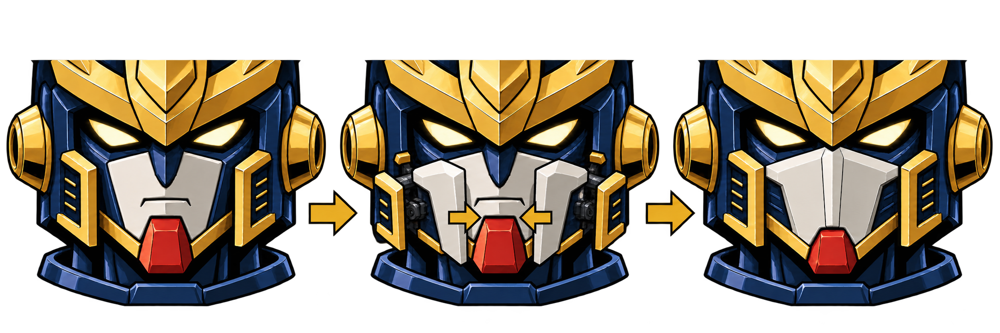

王者 · 红色头鳍与双状态面部
同一顶头盔，普通脸与战斗面罩切换
按标注在金色主角后方、头盔正中增加红色鳍。侧面展开三角鳍面；正面由更高的金色中角遮住，保持同一片鳍的朝向。面罩沿已采用的象牙白折面设计，眼睛、皇冠与耳罩共用。



R7素体／全装与R8面罩源设计已采用；R9红鳍双状态头部源设计已采用。当前三视稿已合入红鳍与面罩，按用户反馈恢复整机腿身比例。
从两侧伸出，再向中央合拢

收纳
护罩藏在两侧颊甲后，保留原有白脸与表情。
伸出
两半护罩沿颊侧短连杆前移，口鼻仍可从中央间隙看见。
合拢
护罩在中轴对接，形成折面脊线；红色下巴作为外露锁扣。反向运动恢复普通脸。
这张图说明零件来源与开合方向。收纳体积、滑移／转轴轨迹和活动避让还需结构稿或模型核对，当前没有转换动画或运行接入。